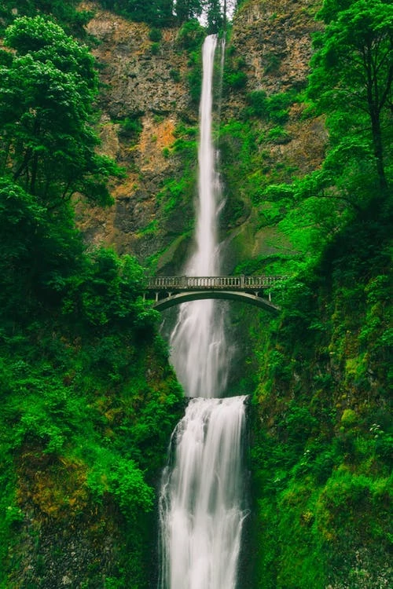

Adventures, Fetching, & Waterfalls
Hi, my name is Buddy...
I’m a dog of few barks, but I have an adventurous spirit. Every morning, I wake up with the sun and prepare for a new adventure with my hooman. My hooman and I are always together! He tells me that he has to go on adventures for work, and I get to be his sidekick. I couldn’t image a more fulfilling way to spend my days. Waterfalls are my favorite exploration destination! I love the way the mist splashes on my fur when I run behind the falls! Every once-in-a-while we get a break from exploring and my hooman takes me to the dog park to play fetch.
We enjoy long walks and jogs through the mountains and rocky terrain. Occasionally, my hooman takes me for rides in his canoe and I get to enjoy watching the fish swimming below us. I try to catch the fish sometimes, but my hooman doesn’t like it when I rock the boat. I love my hooman, but he acts like a cat when he thinks I might accidentally tip the boat over. We usually end up near waterfalls after our canoe rides. I feel like one lucky dog to get to adventure, play, and swim at waterfalls this often!
Another place that I really enjoy is the dog park. I get really excited and wag my tail when I find out that I get to go to the dog park. It’s always exciting for me to get to socialize with other dogs and play fetch. My hooman makes fetch really fun and likes to run and play with me. When my hooman gets tired I enjoy sniffing other dogs and running around the park with them. It’s nice to get a little break from my hooman and enjoy running free with my friends in the park! He seems to enjoy seeing me have a good time anyway, so the dog-park is always a win-win situation.
All-in-all, I’m a pretty happy dog and feel fortunate that I get to enjoy my loving hooman, go on adventures, and take part in exciting hobbies.